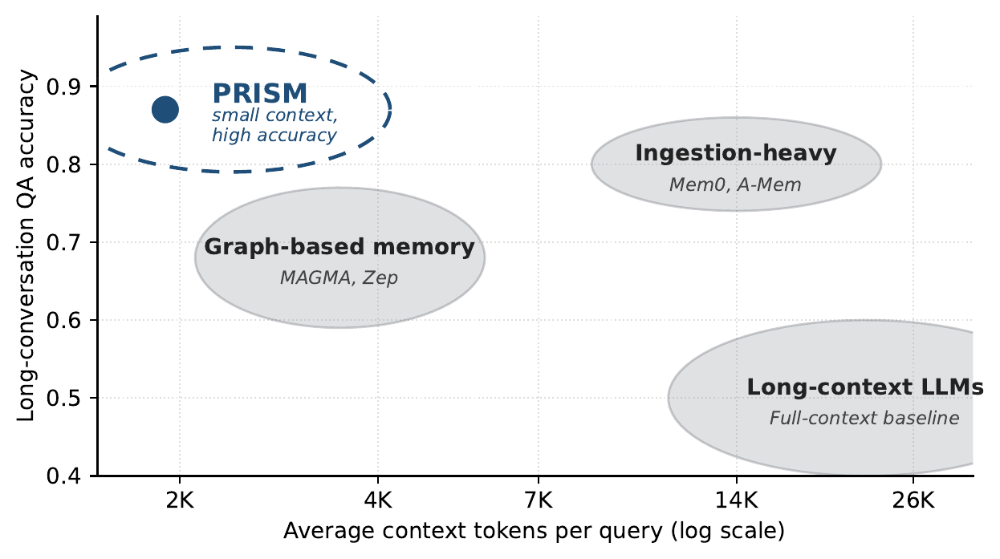
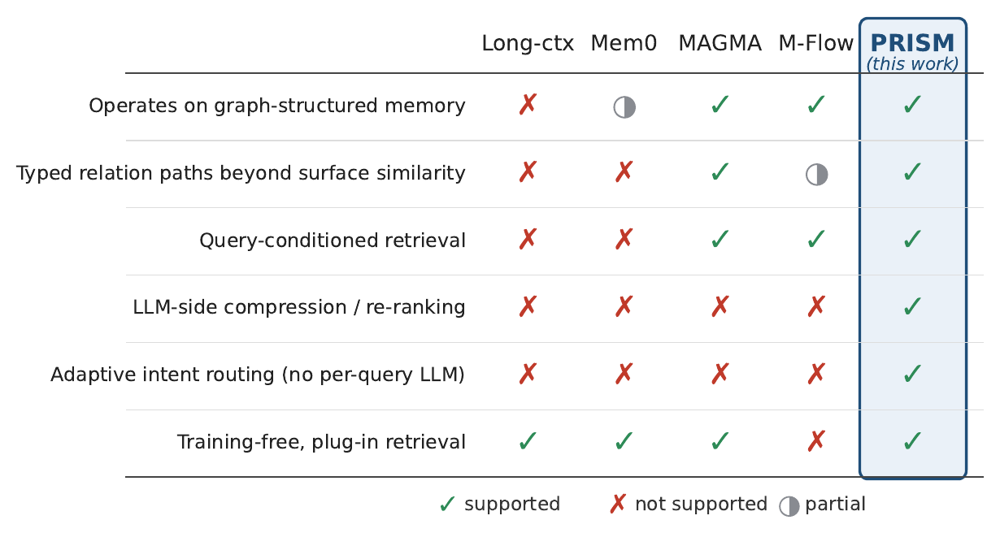
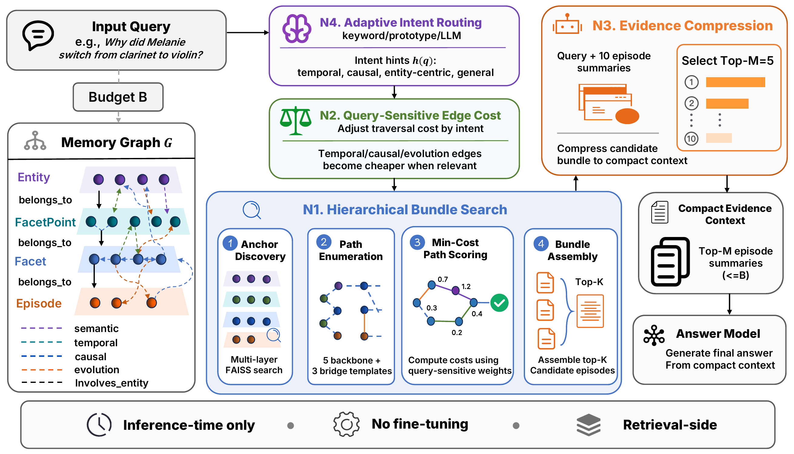
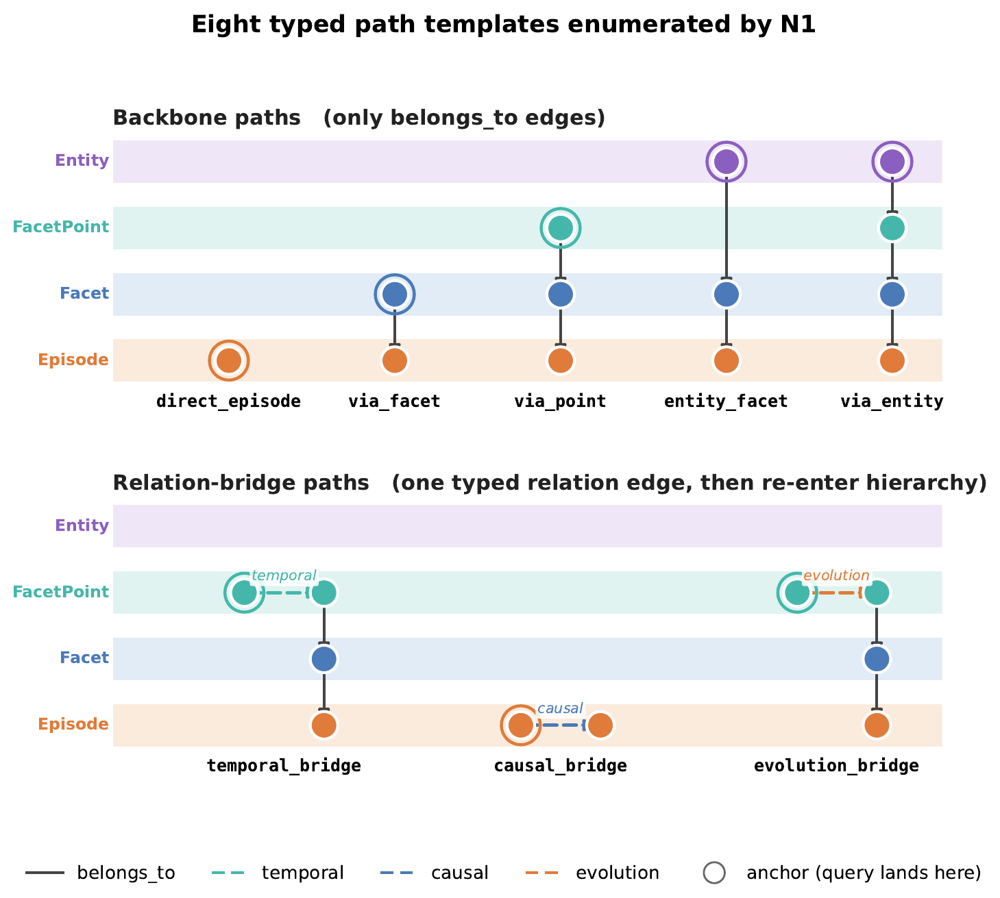
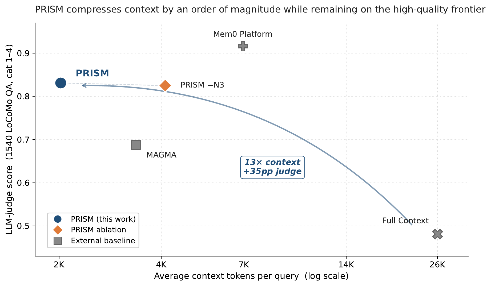
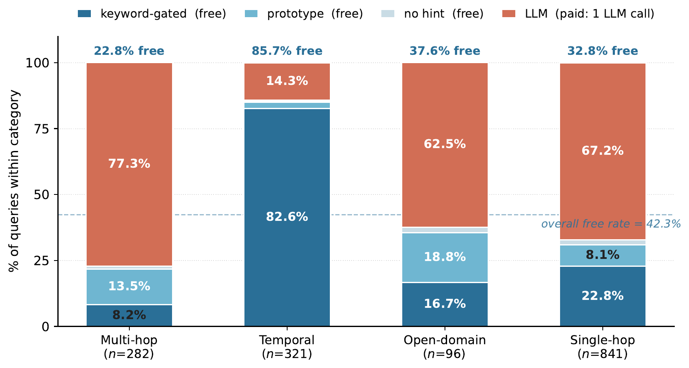

Pareto-Efficient Retrieval over Intent-Aware Structured Memory for Long-Horizon Agents
A training-free, retrieval-side memory framework that reaches high answer accuracy at an order-of-magnitude smaller context budget — by treating long-horizon memory as a joint retrieval-and-compression problem over a graph.
1Singapore Management University · 2The Ohio State University · 3Fudan University
Corresponding author: qzsun@smu.edu.sg
Long-horizon language agents accumulate conversation history far faster than any fixed context window can hold. The quality of a memory system is governed by two coupled quantities: the accuracy of the answers it supports, and the context cost — the number of tokens packed into the answer model's prompt for every query.
Prior systems advance these along separate axes. Ingestion-heavy systems reach high accuracy but retrieve large candidate pools; long-context backbones pay a heavy token cost for moderate accuracy; graph-based memory adds relational structure but sits at moderate accuracy and cost. The high-accuracy / low-cost corner of the frontier is left largely empty — and PRISM is built to occupy it.


PRISM operates over an existing graph memory — a four-layer hierarchy of Entity → FacetPoint → Facet → Episode connected by typed relation edges. At query time, four modules compose into a fixed sequence. No fine-tuning, no per-query policy, no modification to the upstream ingestion pipeline.
Routes each query through a cheapest-first cascade — keyword → prototype → LLM fallback — so most queries never spend a classifier-side LLM call.
Re-weights traversal cost by detected intent: temporal and causal edges become cheaper exactly when the query needs them.
Scores each episode by the minimum-cost typed path that reaches it, recovering evidence that flat similarity search misses.
A single content-only LLM call re-ranks and compresses the candidate bundle into a compact answer-side context.

N1 enumerates eight typed path templates — five backbone paths over belongs_to edges, and three relation-bridge paths that cross one typed relation edge before re-entering the hierarchy. The bridges are the structural basis for answering multi-hop and causal questions.

Evaluation on the LoCoMo benchmark, categories 1–4 (1,540 QA pairs). All same-protocol rows use gpt-4o-mini as both answer and judge model at temperature 0.0, sharing the same prompts, tokenizer, and token-counting procedure. Per-1K Eff. = judge points per 1K retrieved context tokens.
| Method | Multi-Hop | Temporal | Open-Dom. | Single-Hop | Overall | Per-1K Eff. | Ctx / query |
|---|---|---|---|---|---|---|---|
| Same-Protocol (gpt-4o-mini answer model) | |||||||
| Full Context | 0.468 | 0.562 | 0.486 | 0.630 | 0.481 | 0.018 | 26,031 |
| MAGMA | 0.528 | 0.650 | 0.517 | 0.776 | 0.688 | 0.204 | 3,370 |
| Mem0 | 0.512 | 0.555 | 0.729 | 0.671 | 0.669 | 0.379 | 1,764 |
| Mem0g | 0.472 | 0.581 | 0.757 | 0.657 | 0.684 | 0.189 | 3,616 |
| PRISM (ours) | 0.787 | 0.788 | 0.813 | 0.863 | 0.831 | 0.411 | 2,023 |
| Different-Protocol (stronger LLM / managed pipeline — reference only) | |||||||
| M-Flow | 0.752 | 0.794 | 0.583 | 0.876 | 0.818 | 0.316 | 2,588 |
| PRISM (gpt-5.5)ours | 0.890 | 0.879 | 0.927 | 0.892 | 0.891 | 0.440 | 2,023 |
| Mem0 platform | — | — | — | — | 0.916 | 0.131 | ~7,000 |
PRISM wins every same-protocol column and delivers the best accuracy-per-token. Swapping only the answer model to gpt-5.5 lifts the overall score to 0.891 at the same 2,023-token budget.
Compared with full-context replay, PRISM achieves a 13× context reduction with a +35 pp judge gain — the two improvements are aligned, not traded off. Evidence Compression (N3) is the structural reason PRISM sits at the corner of the frontier rather than along its slope.

Each ablation changes one flag relative to PRISM, reusing the same ingest checkpoint. The analysis is deliberately honest about which components matter on this benchmark — and which are built for harder settings.
Removing the LLM re-ranker drops Evidence Recall@5 by 6.8 pp and roughly doubles answer-side context (2,023 → 4,108 tokens). Evidence Compression is what sets the frontier corner.
On LoCoMo, relation paths and edge costs are null — 73.4% of questions cite a single evidence entry and only ~3% need a two-hop bridge. They are built for lexically-mismatched multi-hop settings like MuSiQue or HotpotQA.
Adaptive Intent Routing handles 42.3% of queries through zero-LLM tiers without any measurable accuracy loss. The savings concentrate on temporal queries, 82.6% of which are resolved by keyword triggers alone.

keyword-gated, prototype, and no-hint paths incur zero LLM calls; only the LLM path costs one classifier-side call per query. Overall no-LLM rate: 42.3%.If you use PRISM in your research, please cite our paper:
@article{peng2026prism,
title = {PRISM: Pareto-Efficient Retrieval over Intent-Aware
Structured Memory for Long-Horizon Agents},
author = {Peng, Jingyi and Wan, Zhongwei and Liu, Weiting
and Sun, Qiuzhuang},
journal = {arXiv preprint arXiv:2605.12260},
year = {2026},
url = {https://arxiv.org/abs/2605.12260}
}